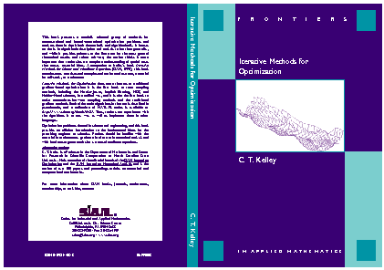

Tim Kelley's Optimization Book

ISBN: 0-89871-433-8
Publication expected in March, 1999.
There is a set of
MATLAB codes for the algorithms.
This book and my
nonlinear equations book are
the texts for
Mathematics 784 .


Last modified: January 5, 1999
C. T. Kelley
,
Tim_Kelley@ncsu.edu